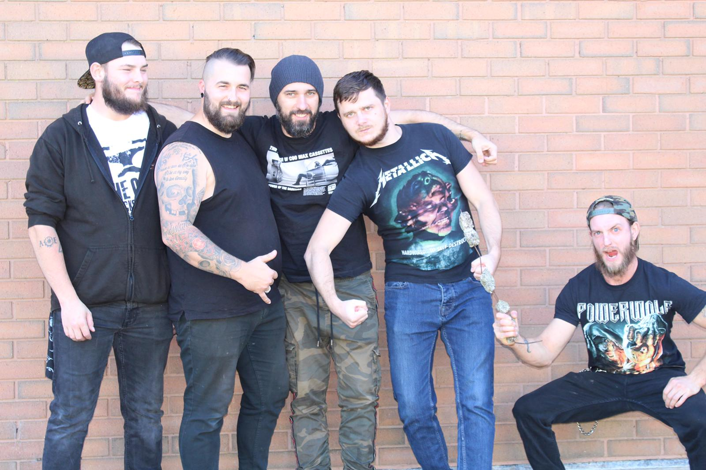
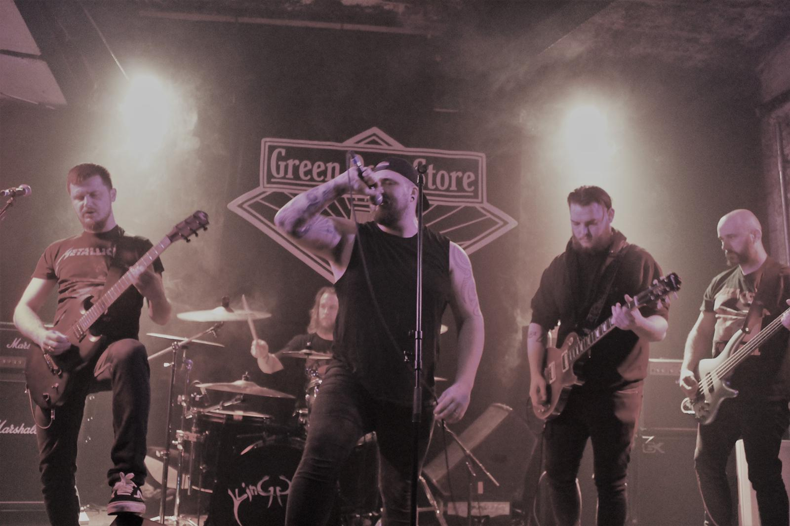

OUR HISTORY
"When Iron Maiden meets Black Sabbath at Pantera's house party, that's Dustron." - Calum R Lattimer.
Dustron was born on the 6th October 2018 in Portsmouth, UK, when guitarists Pete and Alfie met for the first time and jammed to each other’s own songs. Immediately, the chemistry was on and the desire to become the world’s most recognisable metal band, exploded in their heads. Soon, the first obstacle came their way. Barely a month later, Pete got promoted within his day job and was required to relocate to London, and therefore all the big plans came to halt marking the end of the beginning. During the next few weeks Pete was commuting daily to London whilst looking for a new place to live, although he was not too keen on leaving the seaside. After few more weeks, Pete eventually got used to the journey and decided not to move any more. Can you guess what happened next?
It had been four months since Pete and Alfie had played together. Then on 7th March 2019, Alfie received a message from Pete informing him of his situation and asked if he was still up for making this band. The answer was obvious and so Dustron rose from the ashes.
The difficult search for remaining band members began. After weeks of advertising and contacting many candidates, their determination paid off when Alfie got in touch with his friend Craig, who was then a drummer in covers band. Craig was itching to start making original music so agreed to come for a jam on 14 April 2019 and on the very same day, he became a third member of the band.
The three started putting all the ideas together and wrote their very first song titled ‘Dustron’. This enabled the band to record a demo with the aim of attracting the remaining members, bass player and a singer. Although firing on all cylinders created some interest, they struggled to find the right match. After trying couple of singers and few bassists without the luck, the band continued auditioning for another few weeks. On 14 September 2019 they were in for a treat, when the heavily tattooed man called Sam, walked into the room. During the audition they tried few all-time classics and experienced a pleasant surprise, when Sam demonstrated his abilities and different styles of singing. The icing on the cake came after the band played one of their own songs, to which Sam wrote lyrics on the spot and sang along to it like knew it for years. On that day, Sam joined Dustron and the Shepherd of Severed was written.

Having now the singer and lyricist, the band concentrated on writing the music, elevating their excitement to the new highs and putting the rest of the recruitment on hold. Although everyone gelled in nicely and the new music was constantly produced, it was clear that the lack of ‘bass’ has to be addressed quickly, so the search began again. In the meantime, through the word of mouth the band was proposed to play at gig as an opening act, it was the opportunity they could not turn down. This is how on 25th January 2020, Dustron got their very first performance at The Petersfield School, which was followed up by releasing their debut single Damnation Awaits six days later.
Now possessing few tracks and a single released, the band attracted more candidates to fill the bassist post. Similarly, to acquiring the singer, the band was stroked by the man they called ‘The Bald Lemmy’ who’s name is Jacob. Before the audition have even started, there was already a good vibe and the natural bonding between Jacob and rest of the band. Jacob came from another metal band called Lay It On The Line and so was an experienced player and life performer. It didn’t take long to decide, therefore the following day, on 22 February 2020 Jacob completed the line-up for Dustron and just two weeks later played his first gig with the band.
Today, despite the world being disrupted by pandemic, Dustron is working on its debut album and looking forward to performing live. Join them on their mission in making heavy metal last forever.